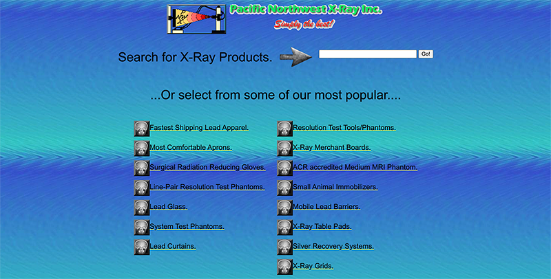
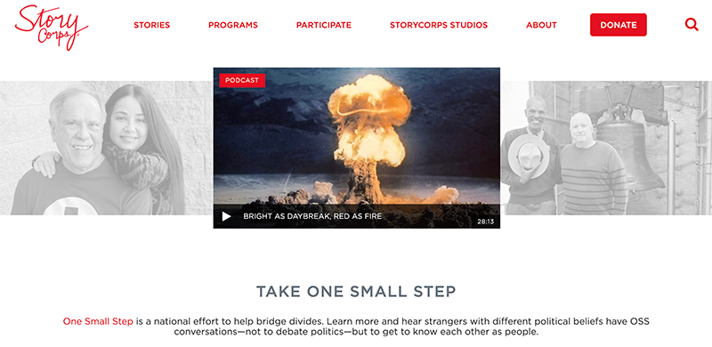

The Role of Typography in Web Design
Typography is one of the most important elements in web design. It shapes how users read, feel, and interact with content. Good typography improves readability, establishes hierarchy, and communicates tone. Poor typography can make a site difficult to engage with.
This article compares two websites with very different approaches to Typography:
PNWX (Disliked)
Click Here to go to PNWX website.
The typography on PNWX feels overwhelming and inconsistent causing a negative impact on the user experience. There is a lack of clear hierarchy that makes it harder to distinguish between headings and body text.
The spacing and font choices also reduce readability. The text feels cramped and there is not enough contrast between elements. Instead of guiding the reader, the typography creates confusion and visual friction.
Overall, the typography does not communicate a clear tone or identity.

StoryCorps (Liked)
Click Here to go to Story Corps website.
StoryCorps uses typography to effectively enhance readability and emotional connection. The site features clean, simple fonts with a clear hierarchy between headings and body text.
The whitespace allows the content to have clarity allowing the user to easily read and navigate. Typography supports the storytelling mission of the site by feeling warm, human, and accessible.
Instead of distracting from the content, the typography strengthens the user experience and reinforces the site's purpose.

Conclusion
Each font type serves a unique purpose. Serif fonts bring tradition, sans serif fonts offer clarity, blackletter styles provide historical flair, and open source fonts ensure accessibility and flexibility.